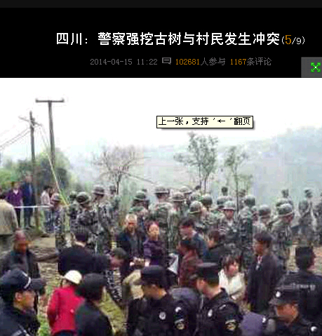

Conversation with 81184027 at Tue 15 Apr 2014 03:16:03 PM CST on 154115835 (webqq)
(03:16:03 PM) 安徽-市区&钟馗: 假如这个世界堕入黑暗，那么，吹灭最后一盏灯的，不是坏人的嚣张气焰，而是好人的忍气吞声。
(03:16:03 PM) 安徽-市区&钟馗: 假如这个世界堕入黑暗，那么，吹灭最后一盏灯的，不是坏人的嚣张气焰，而是好人的忍气吞声。
(03:16:38 PM) 光: 好人很懒惰，坏人很勤劳
(03:17:43 PM) 醒悟: 呵呵!
(03:22:12 PM) 广东-深圳&漂流: 
(03:53:50 PM) さ噯ぢ之泫ぁ: 信全能神的全部死光就好了，自己信祸害家人！！
(03:54:28 PM) さ噯ぢ之泫ぁ: 我婆婆信现在我要和我老公闹离婚了
(03:55:14 PM) - -营长: 你婆婆现在影响到你们的家庭了么
(03:59:24 PM) 光: 主教的墓志铭
我年少时，意气风发，踌躇满志，当时曾梦想要改变世界，但当我年事渐长，阅历增多，我发觉自己无力改变世界，于是我缩小了范围，决定先改变我的国家。但这 个目标还是太大了。接着我步入了中年，无奈之余，我将试图改变的对象锁定在最亲密的家人身上。但天不从人愿，他们个个还是维持原样。当垂垂老矣，我终于顿 悟了一些事：我应该先改变自己，用以身作则的方式影响家人。若我能先当家人的榜样，也许下一步就能改善我的国家，再后来我甚至可能改造整个世界，谁知道 呢？
(04:01:40 PM) 光: 放下自己也放下别人
当恼人的情绪来袭时，如何重拾愉快的心情？
禅的态度是：知道事实，面对事实，处理事实，然后就把它放下。简而言之：面对它、接受它、处理它、放下它。人生，真的有很多不公平要去接受。生活，难免出 现逆境。逃避解决不了问题，只有用智慧把责任负担起来，才能真正地从困扰的问题中获得解脱。因此，放下的幸福，简单而深沉。
面对它、接受它、处理它、放下它
面对它：即是告诉自己，任何事物、现象的发生，都有它一定的原因。我们不须追究原因，也无暇追究原因，唯有面对它、改善它，才是最直接、最要紧的。当问题 发生时，逃避并不能阻止它不出现；只有坦然以对，把它当做是一种应对危机处理的锻炼，或者是另一种让自己成长的助力。不要害怕承担做错的后果，努力从中累 积人生的经验。不做鸵鸟，直面人生。面对是幸福的第一步。
接受它：很多人在问题发生后，都很难接受这个令人失望而意外的结果，但是人生本来就是一连串的起伏波折，得失是很平常的事，我们不可能永远处在顺境之中，所以，遭遇逆境时，也要勇敢接受，就是一种智慧。
处理它：因果必须配合因缘。对于任何不好的情况，如果能够改善它，当即予以改善；若不能改善，也不必失望，继续努力，下次还有成功的机会。
放下它：“逝者如斯夫，不舍昼夜。”过去的事情已然过去，繁华似锦也罢，一塌糊涂也罢，归零是必然的。现实早在重启，你还恋恋不舍，耿耿于怀。心里放不下，又是何苦？
放下自己也放下别人
禅的最高境界，缘于“放下”。“放下”的禅理类同于“得与失”的智慧。失即是得，是一种痛苦，也是幸福。因为只有失去，空下的双手，才能拾起新来的幸福。
能作如此想的人，对一切都会生起同情心与尊敬心。同情人家也是具缚的凡夫，尊敬人家也有独立的人格。无论遭遇任何状况，都不会认为它是一件了不得的事，如 果已经知道可能会发生什么不如意的事，能让它不发生是最好的；如果它一定要发生，担心又有什么用？担心、忧虑不仅帮不了忙，可能还会令情况变得更严重，唯 有面对，最后放下，才是最好的办法。
对感情的问题，宜用理智来处理；对家族的问题，宜用伦理来处理；即使发生了不得了的大事，也应用时间来化解、淡化。能够面对、接受，就等于是在处理；既然已经处理了，也就不必再担心，应该放下了。睡觉时照样睡觉，吃饭时照样吃饭，该怎么生活就怎样生活。
放不下自己是没有智慧，放不下别人是没有慈悲，每一个人都要懂得放自己一马，也要放别人一马，不要把生命浪费在钻牛角尖上。生命的路很长、还宽敞，塞翁失马焉知非福。
(04:05:32 PM) 光: 心安平安--圣严法师
不安是心理的一种感觉，是我们的心受到外在环境影响，觉得没有安全感、没有安定感，所以浮动不安。但是反过来，如果我们的心是安定的，内心有安全感，则外在环境再怎么变动，我们的生活还是可以不受影响。
就像是外面下大雨了，明明知道心急没有用，我们可以做的是因应处理。比如房子会漏水，就要想办法把漏水的地方补起来；虽然下雨天湿淋淋的，还是要想办法出门办点事、想办法种出作物来、想办法还能够有一些娱乐。
虽然下雨天不是好天，但是只要心安，我们的生活就可以不受影响，而过得很快乐、很幸福，这即是「心安就有平安」。
心五四
用「心五四」来成长自己
我们在十年前推出一项「心五四运动」，内容是「四安、四它、四要、四感、四福」，这些观念到现在还是普遍地被运用，其中用得最多的是「四它」：「面对它、接受它、处理它、放下它」。
人生有不如意的事是正常的，遇到问题的时候，要面对问题，接受问题，想办法处理问题，而处理以后就要放下；如果处理以后，问题还是无法解决，也还是要试着放下。用「四它」的观念，可以帮助我们有智慧地处理事情。
此外，被广泛运用的还有「四要」：「需要的不多，想要的太多；能要该要的才要，不能要不该要的绝对不要。」实际上，我们真正需要的东西是不多的。人基本的 需要是吃饱、穿暖，有个地方遮风避雨，这就够了。尤其在不景气的时候，如果大家能把欲望降低一点，而把希望放大、放远一些，就能够知足快乐。
心六伦
用「心六伦」来保障平安
另外，我们在大前年更推动「心六伦」和「关怀生命──防治自杀」运动。其实，「心五四」、「心六伦」和「关怀生命」运动都是相关连的，同样源自「心灵环保」，目的是为了护心、安心。
「心六伦」是家庭伦理、校园伦理、生活伦理、自然伦理、职场伦理和族群伦理，乃是一种新思想、新社会运动。过去传统的儒家「五伦」，已经不太能适应现代社会的需要，因此我们推出「心六伦」来充实「五伦」。
「心六伦」的核心价值，是尽责尽分、奉献利他，这是放诸世间皆准的价值，不只局限于华人社会使用，而是我们奉献给全世界人类一种新的全球伦理运动。
永远抱持信心与希望
我们对自己要有信心，对未来要有希望，若能如此，就算是物质条件减缩、外在环境不安定，我们的心都还是踏实的。心踏实，就有平安。平安是可以相互影响的，我们自己平安，也把自己对未来的希望和作法告诉别人，那么心里的踏实感会更坚定。
人最重要的是生存，只要还留有一口呼吸，就有无限的希望。事实上，没有必要自杀。自杀多半是因为恐惧、害怕，对未来没有希望、没有安全感所致。
有一位企业总裁自杀了，他的自杀让我很震惊，也很遗憾。事实上，他在自杀前曾经来看我，说他活得很辛苦。我劝他要把心照顾好，将心安定下来，事情一样一样 地处理。但是，很可惜我没能帮上忙，没有让他把观念转过来。其实只要调整一下观念，认知逆境、顺境都是过程而已，一时间无法处理的事，不代表永远不能处 理，只要再等待机会，随时可能就会转机。
我自己也是从艰困的环境中走过来的，小时候家里穷，曾经穷到连一口饭也没得吃，于是我吃树皮、树叶，还是一样走过来了。我想现代社会大概不至于有人生活窘迫到没有饭吃吧！
我希望大家都能够记住这句话：「心安就有平安。」外在环境的改变是正常的，人生遇到挫折也是正常的，当我们面对挫折、面对困境，不必往最坏的地方想，而要朝最好的方向看。
大雨天，你说雨总会停的；大风天，你说风总是会转向的；天黑了，你说明天依然会天亮的，这就是心中有希望，有希望就有平安，也就有未来。
本文摘录自《人生杂志306期》
(04:19:03 PM) 光: 曾经有个年轻人，他想把世界简化到纯粹的逻辑里。因为他非常聪明，也确实做到了。他在完成时，回首看着、欣赏着。一个非常美丽，摒除了不完美和不确 定的新世界，象闪耀的冰面无边无际的延伸到天边。那个聪明的年轻人环视他所创造的世界，决定探索它。可是当他向前迈出第一步，立即摔倒了。你看，他忘了摩 擦力。 冰面平坦光滑，洁净无瑕，但是人无法在上面行走。聪明的年轻人坐在那里不禁流下心碎的眼泪。 当他成长为一个智慧的老人时，他开始理解粗糙和混沌并不是缺陷，世界就是因此而运转。他想奔跑舞蹈，顿时语言失去光泽，模糊不清；世界支离破碎，散 落一地。智慧的老人知道这就是事物的本来面目。但在他的内心依然怀念着那纯净的世界，那里的一切闪耀着纯粹的光芒。虽然他甚至已经日渐喜欢那坑坑洼洼的地 面，但无法让自己在那里安顿下来。现在他在地面和冰面之间徘徊，哪里都不是他的归宿。这是他所有悲痛的来由。 ——Derek Jarman
(05:00:33 PM) pastorqi: 4月15日，2014年的第105天。
天天主恩惠,福满溢灵程!
愿我们收获活水吗哪，对神发出感谢赞美
旧约 书 11:-12:
诗 84:
箴 13:5-6
新约 路17:11-37
(07:47:47 PM) 光: 极权社会最大的潜规则：假戏真做
在不能说真话的权力关系中，有权者和无权者都在做戏。日常生活和做戏的界线失去了把持，一切变得真假难分。主奴权力差异悬殊，这极大地限制了权势者和无权 者双方在公开政治话语中真实表白的可能，迫使他们彼此心照不宣地作“不真实表现”。权势政治和下层政治因此都极富表演性。
权势政治和下层政治都离不开公开语本。公开语本指的是“下属者和统治者的公开交往。”公开语本是做戏，是上得台面的表演。
耶鲁大学政治人类学者斯考特(James C. Scott)用“五一”、“国庆”这一类的盛大游行来说明公开语本对绝对权力的确认作用。游行的场面和程序所展现的是权力的威严和等级。主席台上的观礼席 位和入场顺序必须按预定程式一丝不苟地执行，“它所设计的权力和团结的印象，是为了使党员、公民和外国敌对分子受到同样的震慑。”
展示权力者不仅需要把自己放置在权力金字塔的顶端，而且还需要独占公共舞台，因此，一切未经官方批准的群众集会必然只能是“暴徒乱民”的捣乱破坏。
展示权力和行使强制暴力的效能是一样的，但成本却低廉得多。“只要拿捏得当，”斯考特说，“展示权力能造成确实具有权力和有决心行使权力的效果，比真的动武经济实惠许多。”与动真格的暴力相比，展示权力比较文明，比较有风度。
权力展示是表演，其观众不仅是权力震慑对象，而且也是权力拥有者。反复展示的权力能使权力拥有者觉得他真的很了不起。权力展示能起到长自己威风，灭敌人志 气的作用。所以，“某某不投降，就叫他灭亡”或者“叫阶级敌人吓破胆，”这类豪言壮语并非只是小儿科的唬人招数。它们其实是行之有效的政治公开语本戏码。
公开语本的第二个政治作用是隐藏：“只要控制了公开舞台，当权的对付底下人，就能把自己装扮成任何摸样。这种骗术就叫宣传。”因此，当权的必须与老百性保持相当的距离，做出深藏不露的样子。偶然发一道深奥莫测、让人摸不着头脑的指示，给人一种一句顶一万句的感觉。
权力主角需要隐藏，权力的运作也需要隐藏，这样才能显示权力的稳定团结。南斯拉夫作家德吉拉斯(Milovan Djilas)在《新阶级》一书中用一个例子说明后台操纵与前台仪式化表演之间的关系。
德吉拉斯写道，在铁托时期的南斯拉夫，“重大的国家大事是在亲密的饭桌上、猎场上或两、三个人的密谈中决定的。党代表大会、政府会议或议会，其作用只不过是代为宣布或装饰门面而已。”
国家社会出了重大的事情，即使民间已经传得沸沸扬扬，不到官方宣布的时候，也是不能公开议论的。冤假错案不到官方平反的时候，都仍是正确的决定。
于是出现了斯考特所说的“双重文化”现象：“官方文化充满了粉饰之辞、沉默和陈词滥调。而非官方文化则有其自己的历史，自己的文学和诗歌，自己的刻薄话，自己的音乐，自己的幽默，自己的小道消息。”
公开语本的第三、四个作用其实是同一个作用的两个方面，就是凡事粉饰或冠冕堂皇。饿死人是“自然灾害”和“苏俄逼债”的结果，失业是“待业”或“下岗”， 学校关门、学生下乡是“接受贫下中农再教育”。粉饰的要义不在说什么，而在为什么能这么说。斯考特认为，这是“因为统治者对公开知识的垄断是得到受制者公 开认可的。当然，受制者也没有别的办法。但是，只要没有人公开质疑这种垄断，它也就无须提供解释说明，无须负任何责任。”
戏是演给观众看的，观众对戏的反应，信或不信，放在心里或做在面子上，都直接关系到戏的成败。对统治者来说，最理想的当然是受制者心悦诚服地感觉到统治权 力的稳固。退而求其次，也得让受制者觉得，即使不心悦诚服，顺从也比不顺从好。公开表示的顺从，不相信但却做出相信的样子，将观众反应预先纳入权力演示， 这才是权力公开语本的精随。斯考特指出：“有效地展示顺从，再加上对偶尔不顺从行为警戒性的惩处，便能使权力关系演示得有声有色。”
统治权力必须以被统治群体的恭顺、服从的行为来验证其有效存在。斯考特指出:“比起统治者来说，戏本和舞台指示对下层群体的要求要远为严格。”
下层群体表现恭顺和服从必须达到纯熟自然的程度。这当然需要无数次反复方能纯熟自如，几如天性。受制者不仅需要学习正确的言语表情，还要克服因强行自我克制而产生的叛逆心理，“如情不自禁的发怒，冒犯，出言不逊，甚至暴力相向。”
在宫廷文化和官场文化传统深厚的社会中，等级层次间的恭顺和傲慢表演特别程式化和规范化，形成了“下属对上司绝对正确表示的体制性语言。”象开口必称官职或必称“某老”、“某长”一类的行为，斯考特称之为“权力礼仪”。
下层的群体处于权力礼仪的底层，形成美国黑人思想家杜博伊斯所说的“双重意识”：“双重思想、双重义务、双重社会等级的双重生活，它必定产生双重语言和双重理念，使得(奴隶)又要讨好又想反抗，又想装好人又想挺而走险。”
摘自 徐贲 《弱者的抵抗》
(08:00:04 PM) 金乘，不要跑: :强: